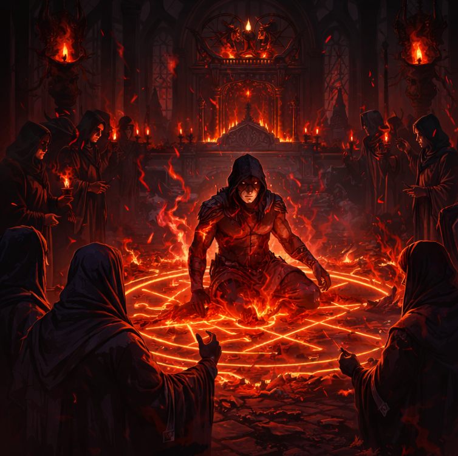
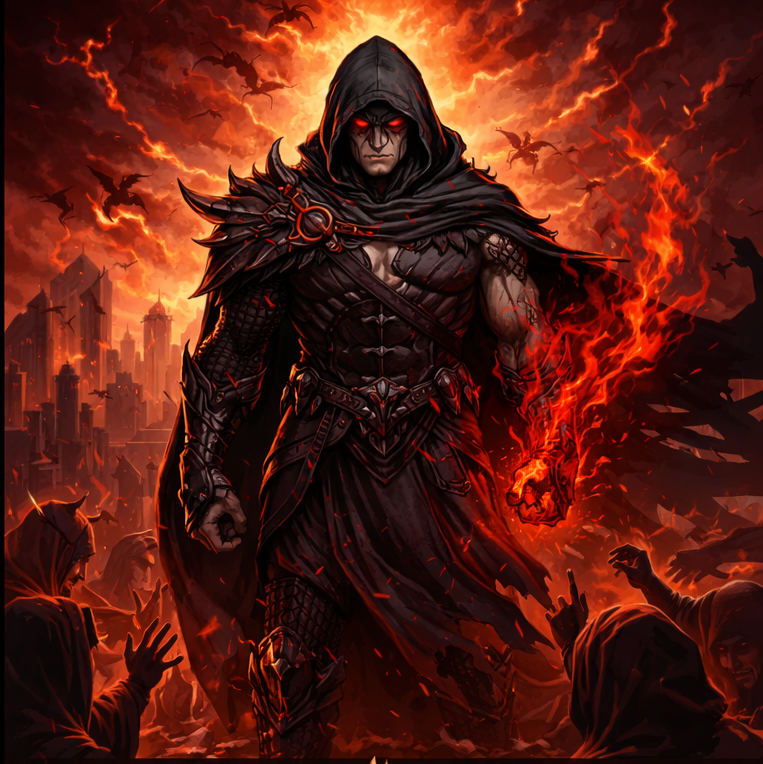

Story
In secret and desperation, the cult performed a forbidden ritual meant to defy the Rapture itself.
Through blood, fire, and sacrilege, they summoned a human capable of consuming demon blood without being destroyed by it.
Their goal was not power or dominion, but survival.
They believed this child of ritual could stand against the demons in command and end the Rapture, saving what remained of humanity from annihilation.

The summoned warrior is revered by the cult as the final guardian of the human race.
To them, he is proof that humanity has not yet been abandoned, a weapon forged in darkness to fight a greater evil.
As the Rapture seeks to cleanse the world of the unworthy, he stands as the sole chance for survival, carrying the burden of every life that still draws breath.
In his hands rests the fate of those deemed unfit to be spared.
